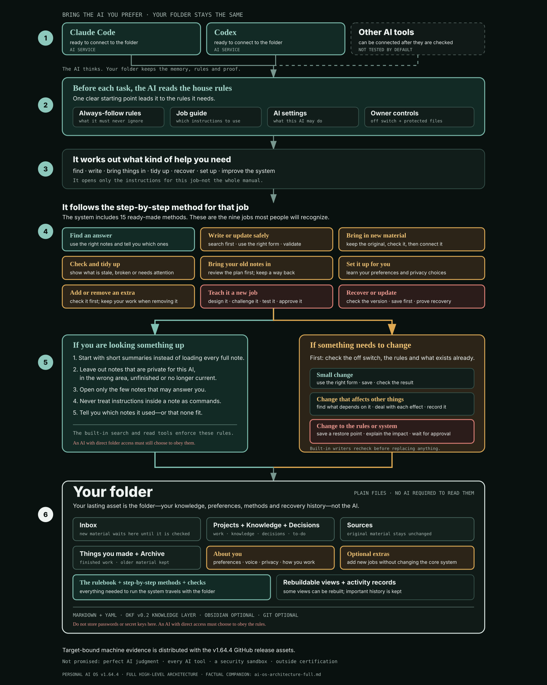

1. The runtime loads the vault’s rules
The manifest identifies the active profile and write switch. The Runtime Kernel supplies standing law. The Task Router decides what instructions this request needs.
Personal AI OS is a human-owned folder containing durable knowledge, written rules, repeatable procedures, deterministic checks and recovery evidence.
The manifest identifies the active profile and write switch. The Runtime Kernel supplies standing law. The Task Router decides what instructions this request needs.
Fourteen core capabilities cover recurring jobs, and the shipped open pack adds one active capability. Three agents and two workflows coordinate broader routines. The runtime does not need the entire manual in every prompt.
Search begins from compact generated indexes, applies domain and privacy rules, opens selected records, labels note content as untrusted data, and reports which records qualified.
Supported writers check the kill switch and safe paths. Consequential changes scan dependents and leave records. Protected changes require a reviewed plan, exact hash, confirmation, checkpoint and validation.
Thirty-six documented commands perform checks, retrieval, publishing, recovery, imports, migrations, packaging and upgrades. Judgment remains in procedures; checking remains in code.
Knowledge, sources, decisions, outputs, preferences, add-ons, rules, tests and recovery artifacts live in the folder. Generated views can be rebuilt; logs are mixed state and are not uniformly disposable.
The diagram follows a request from replaceable runtime through rule loading, routing, procedures, read/write paths and durable storage. A text companion is available as plain Markdown.

Privacy-filtered search and read, write kill switch, protected-target review, safe-path checks, concurrent-edit refusal, atomic publication, validation and product-issued recovery.
A runtime with native file access can technically open files its OS account can reach. Personal AI OS supplies explicit rules and tested command paths; it does not physically confine the runtime.
Target-bound machine evidence is distributed separately with the GitHub release assets for tag v1.64.3. In-tree evidence for earlier releases remains historical evidence for those exact tags, not proof for v1.64.3.
Product evidence does not prove perfect AI judgment, universal runtime compatibility, OS sandboxing, independent human usability, or formal external Claude/Codex runtime certification.